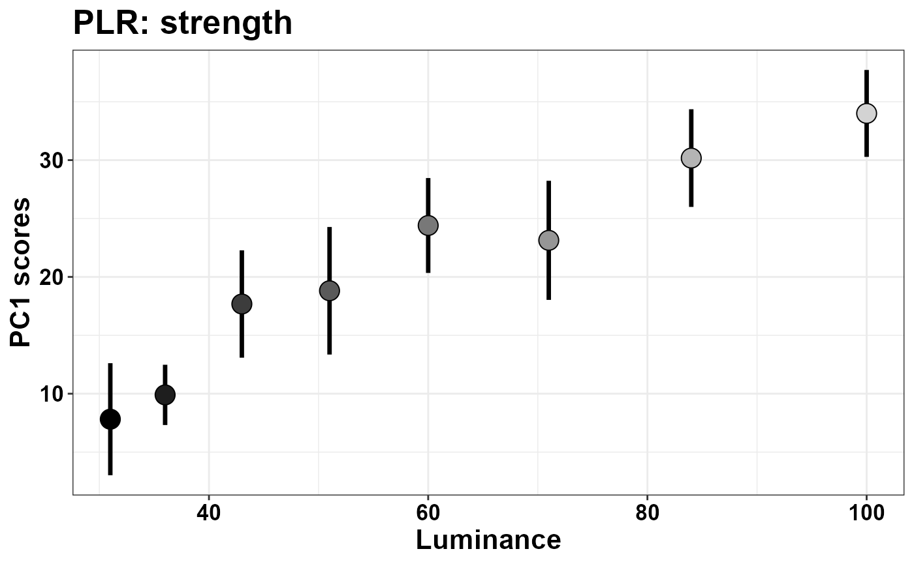
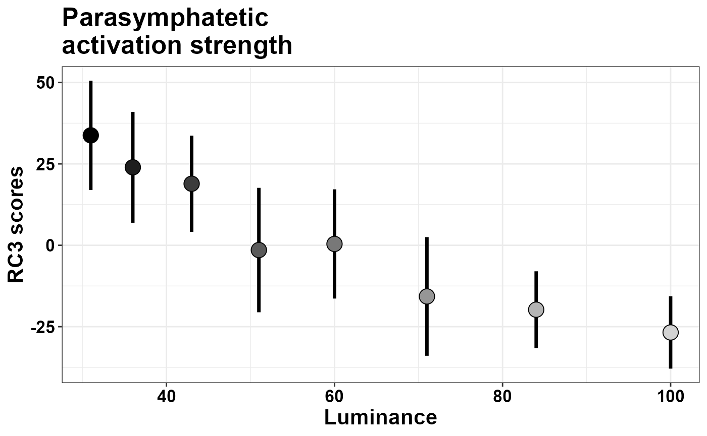

Pupilla::Assessing_Pupillary_Manifold
Elvio Blini
November 2024
Source:vignettes/Pupilla_Assessing_Pupillary_Manifold.Rmd
Pupilla_Assessing_Pupillary_Manifold.RmdIntroduction
Pupilla gathers several functions that are designed to
facilitate the analysis of pupillometry experiments as commonly
performed in cognitive neuroscience, e.g. event-related designs,
although its use could be much more general.
The typical analysis pipeline would, coarsely, include the following steps:
Read the data. This part can vary a lot depending on the eyetracker used, the individual OS, local paths, how the experiment was coded, etc.
Pupilladoes provide utility functions to read from common eyetrackers (e.g., TOBII, EyeLink) but clearly this passage will need to be tailored to your files.Prepare the data. As above, this part may need to be tailored to your specific needs; however, several steps are very common across pipelines, and will be presented in this vignette.
Preprocessing. Pupillometry needs robust preprocessing of the raw data, in order to reduce noise and artifacts (such as those due to blinks). Once the data is properly prepared, this aspect can be translated across several different scenarios. Of course, flexibility and adapting to your own data is warmly advised.
Statistical modelling.
Pupillaoffers two approaches: 1) crossvalidated LMEMs as in Mathôt & Vilotijević, 2022); and 2) an original approach through feature/dimensionality reduction. This vignette covers and illustrates the second option. In particular, we will show what we mean with “assessing the pupillary manifold”, as outlined in the accompanying paper.
For this example we use data from Blini,
Arrighi, and Anobile, 2024. Data can be retrieved in full from the
associated OSF repository. If you
install Pupilla with the data included, however, you will
actually find the complete preprocessed data from Exp 1 (the “PLR” task)
included in the package, so that it will be extremely easy to lead them
in R (shown below).
In this task we asked 20 healthy, young participants to passively
watch a matrix of numbers change color/luminance level. Thus, the data
highlight the well known Pupillary Light Response
(PLR). The aim of this vignette is to present how temporal PCA
and rotated temporal PCA can be implemented with
Pupilla.
Read the data
The library Pupilla must be installed first, and only
once, through devtools:
#install.packages("devtools")
devtools::install_github("EBlini/Pupilla")Dependencies will be installed automatically. We will then need to load the following packages:
##
## Attaching package: 'dplyr'## The following objects are masked from 'package:stats':
##
## filter, lag## The following objects are masked from 'package:base':
##
## intersect, setdiff, setequal, unionReading the data is straightforward in that the data come with the package:
data(plr)That’s it! Note that the recordings have been preprocessed already, including baseline subtraction. We can plot the results:
plr$Luminance= as.factor(plr$Luminance)
colfunc <- colorRampPalette(c("black", "light gray"))
plr$Color= colfunc(8)[plr$Luminance]
plr %>%
group_by(Subject, Luminance, Time) %>%
summarise(Pupil= mean(Pupil), Color= Color[1]) %>%
#between
group_by(Luminance, Time) %>%
summarise(SEM= sd(Pupil)/sqrt(n()),
SEM= 1.96*SEM,
Pupil= mean(Pupil),
Color= Color[1]) %>%
ggplot(aes(x= Time, y= Pupil)) +
geom_vline(xintercept = c(0), linewidth= 1,
color= "gray", linetype= "dashed") +
geom_hline(yintercept = 0, linewidth= 1,
color= "gray", linetype= "dashed") +
geom_line(aes(color= Luminance),
linewidth= 1.2, show.legend = T) +
scale_color_manual(values = colfunc(8)) +
geom_ribbon(aes(ymin= Pupil-SEM,
ymax= Pupil+SEM,
fill= Luminance),
alpha= 0.2) +
scale_fill_manual(values = colfunc(8)) +
theme_bw() +
theme(text= element_text(size= 16,
face="bold",
color= "black")) +
xlab("Time (ms)") +
ylab("Pupil size change (z scores)") +
ggtitle("PLR: changes in pupil size") +
scale_x_continuous(breaks=c(0, 1500, 4500)) As you can see, the brighter the luminance, the stronger the pupil constriction, with peak values between 1-1.5 s, followed by pupil escape.
temporal PCA
Temporal PCA attempts to summarise the data in fewer dimensions by at the same time maximizing the amount of information retained. The scores that can be obtained in this way are: 1. very handy to analyse 2. very interpretable (but see below and the paper) 3. mindful of the factor “time” (that is weighted in) 4. fully data-driven, hence less arbitrary.
Temporal PCA in Pupilla is implemented as a wrapper
around stats::prcomp(), and is very straightforward (once
data have been preprocessed).
#this is not always necessary
#but do make sure that "Time" is properly ordered
plr= plr %>%
arrange(Subject, trial, Time)
#you must include only timepoints with non-zero variance
data= plr[plr$Time> 0,]
#for clarity, here's the variables needed
dv= "Pupil"
time = "Time"
id = "Subject"
trial = "trial"
Ncomp = 3 #not very relevant for PCA
add= c("Luminance")
#Temporal PCA is actually only one function!
plr_pca= reduce_PCA(data,
dv= dv,
time = time,
id = id,
trial = trial,
Ncomp= Ncomp,
add= add)## Warning in reduce_PCA(data, dv = dv, time = time, id = id, trial = trial, : NAs in the data will be discarded:
## check the data!There is an overly-sensitive reminder that PCA only works if you do not have missing values for any timepoint. If any value within one recording is missing, the respective trial will not be considered for PCA. In other words: you cannot have trials of different length or sampling rate or without imputation/interpolation of missing values, and all the time points must be the same.
Apart for this, PCA with Pupilla ends here! Let’s look
at the object created this way:
names(plr_pca)## [1] "rs_mat" "summaryPCA" "Loadings" "Scores" "PCA"
## [6] "scaling"The object is a list with the following entries:
- “rs_mat” is the matrix used for PCA, for your reference. You probably will not need this, but it’s always good to check whether the matrix has the dimensions that you expect.
dim(plr_pca$rs_mat)## [1] 869 449
#rows are all trials from all participants
length(
unique(
interaction(plr$Subject, plr$trial)))## [1] 869## [1] 449In the future this message may become more informative / reassuring.
“summaryPCA” is the summary returned by
prcomp(). It has all the components (the rows in your data) together with the respective eigenvalues and share of explained variance.“Loadings” are the eigenvectors for PCA and the Loadings (proper) for rotated solutions. This may perhaps be changed in the future, e.g. to “weights” for enhanced compatibility.
“Scores” are, yes, the Scores, that is the “strength” of one component in the low dimensional space.
“PCA” is the object returned by
prcomp(). You may not need it directly though it is useful for prediction of unobserved data, for example (see, e.g., the functionPupilla::predict_feature()).“scaling” is information about data scaling, if relevant. This is mostly useful if you change the default settings - which do not normalize or center the data because they assume you already did baseline subtraction at very least - but then you want to predict new, untrained data (which then should be normalized according to the original values used in the model, see
Pupilla::predict_feature()).
In a typical pipeline, we can start by assessing the relative contribution (to the explained variance) of each component.
plr_pca$summaryPCA[,1:Ncomp]## PC1 PC2 PC3
## Standard deviation 30.88680 11.53209 7.752494
## Proportion of Variance 0.78546 0.10950 0.049480
## Cumulative Proportion 0.78546 0.89496 0.944440The first one can account for a very substantial share of the variability, that is almost 80%. There are several helper functions to depict the eigenvectors. For the depiction of single components you can use:
plot_loadings("PC1", plr_pca)Else, you can plot all components together with
Pupilla::plot_fingerprints(). I originally used the term
“fingerprints” assuming that certain changes in pupil size are the
signature of distinct physiological processes, though now I lean toward
thinking this is only applicable to rotated solutions (see below); for
those, however, I will reserve the term “pupillary manifold”, whereas
“fingerprints” can perhaps be more general and include all sorts of
latent constructs, regardless of their origin. In fact, this function
will work for temporal PCA, rotated PCA, and Independent Components
Analysis (ICA, not coped with here, though you do have functions for
that). The catch: for now this function only work when
Ncomp== 3; later on, it will be clearer why.
plot_fingerprints(plr_pca)The function has options to reorder the variables or to flip their sign (note that the sign of the eigenvectors is perfectly arbitrary in PCA):
plot_fingerprints(plr_pca,
order = "peak",
flip = c(1, -1, 1))## Warning in plot_fingerprints(plr_pca, order = "peak", flip = c(1, -1, 1)):
## Warning: fingerprint names have been reordered following the explained
## variance!Then, you probably want to assess the scores. Scores are saved in the
dataframe returned by the reduce_feature() object. If you
have additional experimental variables to assess, you can add this piece
of information when performing PCA through the add
parameter. This way, the dataframe will have all the relevant
information, and you can proceed to modelling or plotting directly with
the dataframe provided.
pca_scores= plr_pca$Scores %>%
group_by(id, Luminance) %>%
summarise(PC1= mean(PC1)) %>%
group_by(Luminance) %>%
summarise(SEM= sd(PC1)/sqrt(n()),
SEM= 1.96*SEM,
PC1= mean(PC1))
ggplot(pca_scores, aes(x = Luminance, y = PC1)) +
geom_segment(aes(
y = PC1 - SEM,
yend = PC1 + SEM,
xend = Luminance
), linewidth = 1.2) +
geom_point(
aes(fill = as.factor(Luminance)),
shape = 21,
size = 5,
show.legend = F
) +
scale_fill_manual(values = colfunc(8)) +
xlab("Luminance") +
ylab("PC1 scores") +
theme_bw() +
theme(
text = ggplot2::element_text(
size = 16,
face = "bold",
colour = "black"
),
axis.text = element_text(colour = "black")
) +
ggtitle("PLR: strength")
Here we can see that the first component is a latent dimension along which the PLR happens with distinct strength, and different luminance conditions are well separable along this dimension. That the scores do reflect the “strength of the PLR” is also suggested by the shape of the eigenvector of PC1 seen above, which reflects our principled knowledge of what the PLR should look like. Below we additionally map the strength of the correlation between objective luminance levels and the scores of this component.
plr$Luminance=as.numeric(as.character(plr$Luminance))
pca_cor= plr_pca$Scores %>%
group_by(id, Luminance) %>%
summarise(PC1= mean(PC1)) %>%
group_by(id) %>%
summarise(R= cor(PC1, Luminance))
M= mean(pca_cor$R)
SEM= sd(pca_cor$R)/sqrt(20)
ymax= M + 1.96*SEM
ymin= M - 1.96*SEM
plr_mean= plr %>% filter(Time > 0) %>%
group_by(Subject, Time, Luminance) %>%
summarise(Pupil= mean(Pupil)) %>%
group_by(Subject, Time) %>%
summarise(R= cor(Pupil, Luminance)) %>%
group_by(Time) %>%
summarise(M= mean(R), SEM= sd(R)/sqrt(20))
ggplot(plr_mean, aes(x= Time, y= M)) +
geom_hline(yintercept = 0, linetype= "dashed") +
geom_rect(aes(xmin= 10, xmax= 4490,
ymin= - ymin,
ymax= - ymax),
fill= "light blue",
alpha= 0.3) +
geom_line() +
geom_line(aes(y= M - 1.96*SEM), color= "red")+
geom_line(aes(y= M + 1.96*SEM), color= "red") +
theme_bw() +
ylab("Pearson's R") +
scale_x_continuous(breaks=c(0, 1500, 4500)) +
theme(text= ggplot2::element_text(size= 16,
face="bold",
colour= "black"),
axis.text= element_text(colour= "black")) +
ggtitle("PLR: timecourse")To conclude, temporal PCA represents a very handy approach, capable to return few, very manageable values that are mindful of the temporal aspect. On the other hand, as we discuss in the paper, the approach should be used whenever we are fully confident that the process at hand only involves one (or one major) process that we intend to isolate. For example, when we add some sort of Working Memory Load (WML) to the equation, that is different levels of cognitive load and hence of the associated psychosensory dilation, the eigenvector of the first component still captures the major axis of variability, i.e. a mixture of the PLR and WML effects, without dissociating the two.
As we discuss in the paper, at that point we may want to use approaches that are not only mindful of the temporal aspects, but also of the underlying physiology. This, we refer to as “assessing the pupillary manifold”.
Rotated PCA
rotated PCA is implemented in the package as wrappers around
psych::principal(). Please note that the function, even in
absence of rotations, produces slightly different results from
stats::prcomp() in light of several differences in
parametrization and analytical approach. Please refer to the excellent
psych package documentation for the differences between
psych::principal() and psych::fa().
However, the implementation of rotated PCA is extremely similar to that of regular PCA. The only extra bit of information required is the rotation type - but the default is “promax”, and should do.
#again, just in case
plr= plr %>%
arrange(Subject, trial, Time)
#you must include only timepoints with non-zero variance
data= plr[plr$Time> 0,]
#for clarity, here's the variables needed
dv= "Pupil"
time = "Time"
id = "Subject"
trial = "trial"
Ncomp = 3 #very relevant for rPCA
add= c("Luminance")
rotate= "promax" #new!
#Temporal PCA is actually only one function!
plr_rpca = reduce_rPCA(
data,
dv = dv,
time = time,
id = id,
trial = trial,
Ncomp = Ncomp,
add = add,
rotate = rotate
)## Warning in reduce_rPCA(data, dv = dv, time = time, id = id, trial = trial, : NAs in the data will be discarded:
## check the data!## Warning in cor.smooth(r): Matrix was not positive definite, smoothing was done## The determinant of the smoothed correlation was zero.
## This means the objective function is not defined.
## Chi square is based upon observed residuals.## The determinant of the smoothed correlation was zero.
## This means the objective function is not defined for the null model either.
## The Chi square is thus based upon observed correlations.## Warning in psych::principal(rs_mat, nfactors = Ncomp, rotate = rotate): The
## matrix is not positive semi-definite, scores found from Structure loadingsYou will inevitably see many warnings from psych. My
reading is that these warnings are harmless because only lamenting the
high dimensionality of the data, and the inability to tell whether a
Ncomp solution would be appropriate given the data. Then,
the only differences in the returned object are:
names(plr_rpca)## [1] "rs_mat" "summaryPCA" "summaryRPCA" "Loadings" "Scores"
## [6] "rPCA" "scaling"The model returned is not, of course, based on
prcomp()but onprincipal()On top of the PCA summary - which is still based on prcomp - you can find the summaryRPCA, reporting the same information but for the rotated solution.
plr_rpca$summaryRPCA## RC1 RC2 RC3
## SS loadings 176.4576950 151.1138267 59.6308080
## Proportion Var 0.3930015 0.3365564 0.1328080
## Cumulative Var 0.3930015 0.7295580 0.8623660
## Proportion Explained 0.4557248 0.3902710 0.1540043
## Cumulative Proportion 0.4557248 0.8459957 1.0000000Notice that the overall explained variance is 86%, instead of 95% by
prcomp. This would also be the case with rotate= "none",
and has to do with the internal parameters of principal().
You can also see that the single components have also changed their
share of explained variance, this time in light of the rotation itself.
They account for a more even share of variance, i.e. 39% for rPC1 and
34% for rPC2.
You can use the same set of wrapper functions as above:
plot_fingerprints(plr_rpca)And you can assess the scores as well:
rpca_scores= plr_rpca$Scores %>%
group_by(id, Luminance) %>%
summarise(RC3= mean(RC3)) %>%
group_by(Luminance) %>%
summarise(SEM= sd(RC3)/sqrt(n()),
SEM= 1.96*SEM,
RC3= mean(RC3))
ggplot(rpca_scores,
aes(x = Luminance, y = RC3)) +
geom_segment(aes(
y = RC3 - SEM,
yend = RC3 + SEM,
xend = Luminance
), linewidth = 1.2) +
geom_point(
aes(fill = as.factor(Luminance)),
shape = 21,
size = 5,
show.legend = F
) +
scale_fill_manual(values = colfunc(8)) +
xlab("Luminance") +
ylab("RC3 scores") +
theme_bw() +
theme(
text = ggplot2::element_text(
size = 16,
face = "bold",
colour = "black"
),
axis.text = element_text(colour = "black")
) +
ggtitle("Parasymphatetic\nactivation strength")
What changes is the likely meaning of the scores.
The Pupillary Manifold
As we discuss more thoroughly in the paper, we rotated solution returns a set of loadings that is extremely constant across different tasks. In this sense it is unlikely to reflect some idiosyncratic to the data. On the contrary, loadings are more likely to reflect hard constraints of the underlying physiology or the signal itself. The suggestion is made that the three components recovered in this way reflects physiologically relevant processes:
- RC1: symphatetic activation
- RC2: parasymphatetic inhibition
- RC3: parasymphatetic activation
The relative scores define where the pupil traces lie (their coordinates) on a low-dimensional space reflecting the overall balance of the autonomic nervous system. Thus, on top of being handy to analyze, mindful of temporal aspects, completely data-driven, and so on, these values are also physiologically meaningful.
The toolbox comes with wrapper functions for 3D plots through
plot3D, which is not installed by default with the package
- so plot3D should be installed manually.
plr_rpca$Scores$Luminance= as.factor(plr_rpca$Scores$Luminance)
plot_manifold(plr_rpca$Scores,
colvar = "Luminance",
theta = 30, phi= 15)Finally, gifski (not installed automatically) provides
utilities to create GIFs from several different images. The function
animate_manifold() does precisely that: it creates a folder
populated with many plot_manifold() images taken from
different views, an saves a gif image in the current path.
Appendix
Packages’ versions:
## R version 4.2.3 (2023-03-15 ucrt)
## Platform: x86_64-w64-mingw32/x64 (64-bit)
## Running under: Windows 10 x64 (build 19045)
##
## Matrix products: default
##
## locale:
## [1] LC_COLLATE=Italian_Italy.utf8 LC_CTYPE=Italian_Italy.utf8
## [3] LC_MONETARY=Italian_Italy.utf8 LC_NUMERIC=C
## [5] LC_TIME=Italian_Italy.utf8
##
## attached base packages:
## [1] stats graphics grDevices utils datasets methods base
##
## other attached packages:
## [1] ggplot2_3.5.1 dplyr_1.1.4 Pupilla_0.1.1.01
##
## loaded via a namespace (and not attached):
## [1] highr_0.11 bslib_0.6.1 compiler_4.2.3 pillar_1.9.0
## [5] jquerylib_0.1.4 tools_4.2.3 digest_0.6.34 nlme_3.1-162
## [9] lattice_0.22-5 jsonlite_1.8.8 evaluate_1.0.1 memoise_2.0.1
## [13] lifecycle_1.0.4 tibble_3.2.1 gtable_0.3.6 pkgconfig_2.0.3
## [17] rlang_1.1.3 psych_2.4.1 cli_3.6.2 rstudioapi_0.15.0
## [21] parallel_4.2.3 yaml_2.3.8 pkgdown_2.0.7 xfun_0.46
## [25] fastmap_1.1.1 withr_3.0.2 knitr_1.48 desc_1.4.3
## [29] generics_0.1.3 fs_1.6.3 vctrs_0.6.5 sass_0.4.9
## [33] systemfonts_1.0.5 plot3D_1.4.1 grid_4.2.3 tidyselect_1.2.1
## [37] glue_1.7.0 R6_2.5.1 textshaping_0.3.7 fansi_1.0.6
## [41] tcltk_4.2.3 rmarkdown_2.28 farver_2.1.2 purrr_1.0.2
## [45] magrittr_2.0.3 scales_1.3.0 htmltools_0.5.7 misc3d_0.9-1
## [49] mnormt_2.1.1 colorspace_2.1-0 labeling_0.4.3 ragg_1.2.7
## [53] utf8_1.2.4 munsell_0.5.1 cachem_1.0.8